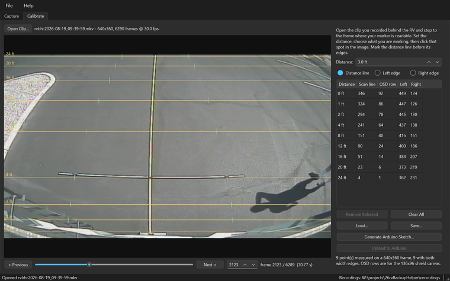

Distance lines and a vehicle-width corridor on an RV backup camera that draws none — measured from your own coach, not guessed from a template.
An RV backup camera shows a picture and nothing else. There is no way to tell from it whether the post behind you is four feet away or twelve, and the last three feet of a reversing manoeuvre are the ones that cost money. The usual remedy is to replace a perfectly good display with a head unit that draws guide lines — expensive, and the lines it draws were never measured against your vehicle.
RV Backup Helper takes the other route. You measure the real world once, behind your own bumper, and the application turns those measurements into an Arduino sketch that overlays them on the live camera picture. The camera stays, the display stays, and the lines are true because they came from a pole laid in your own driveway.
An RV backup camera is analogue composite video — the same signal television used before HDMI. That is unglamorous, and it is exactly why this works: composite carries brightness and timing on a single wire, so a chip can lock to that timing and inject extra brightness on top without understanding the picture at all. The trick is old. Broadcast character generators did it for captions in the 1970s, and radio-controlled aircraft have used it for decades to put battery voltage over a live camera feed.
The alternative — digitise the video, draw on it, re-encode it — is easier to write and wrong for this job, because it puts a computer between the driver and the rear view. The analogue overlay adds no stage to the signal path. If the board dies, the camera passes straight through and the driver simply sees no lines: not a frozen frame, not a blank screen.
Horizontal lines mark the distances you measured, each label set into a break in its own line so there is no doubt which belongs to which. The dashed pair is the width of your RV, drawn through the points you marked. The 1 ft line is heavier.
The overlay is monochrome, and that is hardware rather than taste: it is one bit per pixel, and NTSC colour would need a subcarrier the microcontroller cannot generate while it is also locking to the camera. Line weight is therefore the only hierarchy available — and thickness grows downward, so a heavier line never makes an obstacle look closer than it is.
It cannot skip the measuring. There is no template, no vehicle database and no guess: the lines exist because you laid a pole behind your own bumper and clicked it. That is an afternoon, once, and it is the whole reason the result is worth trusting.
It is also not a proximity sensor and not a warning system. It draws where the ground was when you measured it, on flat ground. A slope, a kerb, or something hanging above the ground is not what the lines describe. It is a better rear view, not a substitute for using it.
Free Windows installer — Python is bundled, so there is no prerequisite of any kind.
Download for Windows Source on GitHubThe button brings you to the GitHub release page: scroll down to the Assets section and click rvBackupHelperSetup-1.0.0.exe. The install is per-user, so there is no administrator prompt and nothing lands in Program Files.
The wizard runs its hardware check on the page after Welcome, before a single file is written, so somebody with no capture device finds out in five seconds rather than after a download. The Arduino AVR core is a tick box at the end — it is a 295 MB download, and only uploading to the board needs it.
Windows may show a SmartScreen notice on first run because the download is unsigned; choose “More info”, then “Run anyway”. The application runs on Windows 10 and 11. The board and the shield, once flashed, have nothing to do with any operating system.

Visit the RV Backup Helper SiteThe whole job walked through in ten steps, with screenshots.
The User ManualFive pages: the rig, recording, calibrating, flashing, and the enclosure.
The Video Experimenter ShieldThe overlay hardware, from Nootropic Design. Not ours, but worth reading before ordering.
RV Backup Helper is free and open source. There is no licence to buy, no seat to renew, no account to make, and nothing about you is collected or sent anywhere. That is also why software like this is hard to sustain: there is no subscription to bill and no data to sell, so nothing pays for the work behind it.
Most of what is in this application came from getting it wrong first. A whole calibration session was lost to a grid left switched on, burned into the footage on top of the very markings that needed clicking. A working day went to a video library that compiles perfectly and then leaves the board answering nothing. Those afternoons are the reason the traps are written down in the manual, and the reason the application checks the things it checks before you drive anywhere.
If this saved you a new head unit, an installer's afternoon, or a bumper, please consider chipping in. It genuinely makes the difference between a project that keeps improving and one that quietly stops.
DonateSecure payment through PayPal — no account required, and any amount is appreciated. Thank you for supporting independent, open source software.